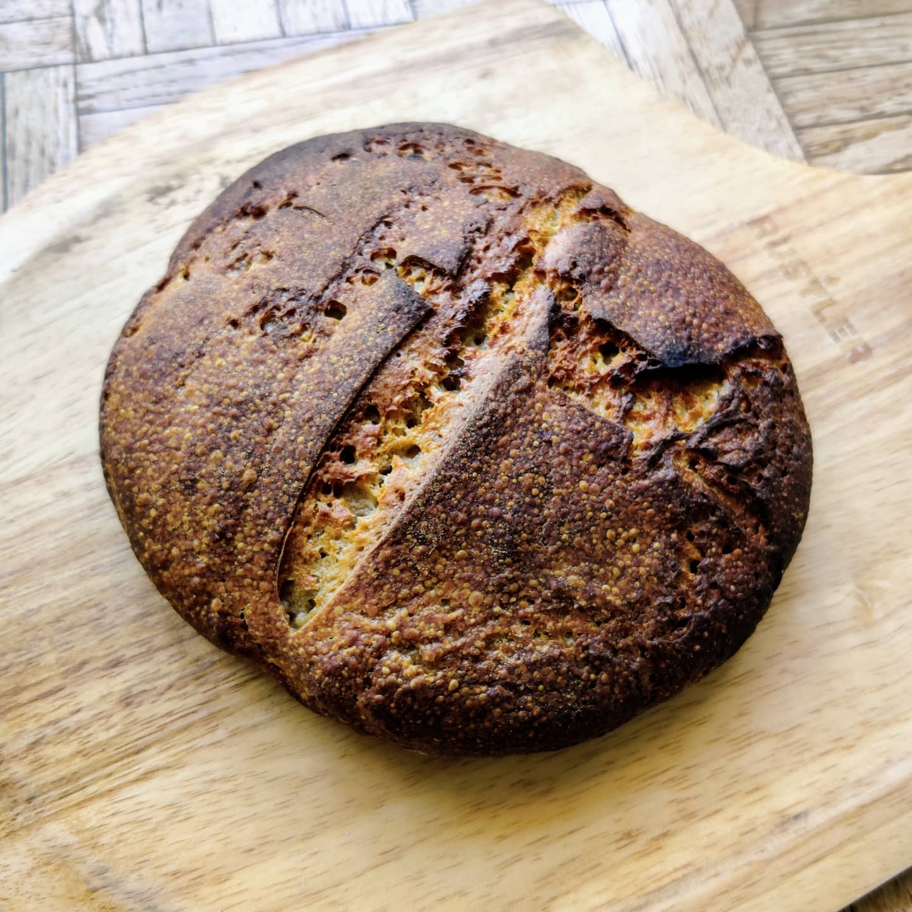
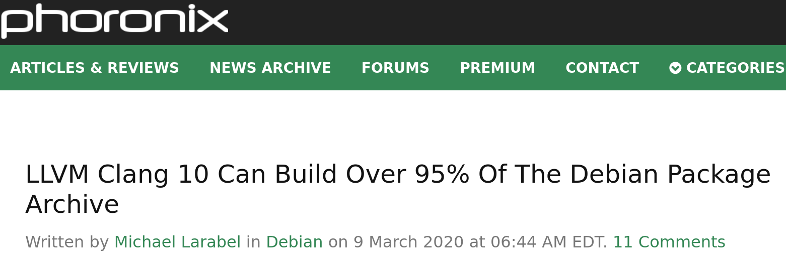

class: center, middle, inverse # Reimplementing the Coreutils in a modern language ## (Rust, not C++) ## Sylvestre Ledru - sylvestre@debian.org --- # Who am I ? Debian developer, LLVM/Clang contributor, and other things. Director at Mozilla (but this work is unrelated to Mozilla). And been managing some <img src="Rust_programming_language_black_logo.svg" width="300"/> developers but also worked next to Rust core developers. --- # Who am I ? (bis) I also uploaded the initial version of Rustc in Debian/Ubuntu. And maintainer of ripgrep, fd and some others Rust based packages in Debian/Ubuntu. --- # Early 2020 <img src="covid-1.png" height="150"/> <img src="covid-3.png" height="80"/> --- class: center, middle, inverse template: inverse # How to make the best use this time? --- # Some people made  .footnote[Credit Julien Danjou - April 2020] --- # Other did Some gardening, wood working, etc --- # At home, we started with <img src="lego.png" /> --- # Then <img src="buffy.jpg" height="400" /> .footnote[Total: 106 hours 42 minutes] --- # Continued with .footnote[Total: 102 hours 30 minutes] --- # Me? I want to learn Rust for real with an impactful project. --- # Clang & Debian Back in 2012, I played with clang to rebuild the Debian archive. <br /> <hr />  --- # Rust ? How can I replicate something similar with Rust? --- # Rust ? How can I replicate something similar with Rust? ## glibc ? Too hard --- # Rust ? How can I replicate something similar with Rust? ## glibc ? Too hard ## Linux kernel, clang, llvm ? Way too hard --- class: center, middle, inverse template: inverse # What about the Coreutils ? --- # What about the Coreutils ? I have always been curious to see how it works. Even if I am terrible with ASM... --- # What about the Coreutils ? I have always been curious to see how it works. Even if I am terrible with ASM... ## Good news There is almost no ASM in the GNU/coreutils (besides a few lines in src/longlong.h). --- # What the point ? Well, it is a good question --- # What the point ? Well, it is a good question 1. Why not? --- # What the point ? Well, it is a good question 1. Why not? 2. Rust rocks. --- # What the point ? Well, it is a good question 1. Why not? 2. Rust rocks. 3. It is NOT about security<br /> https://security-tracker.debian.org/tracker/source-package/coreutils<br /> Only 17 CVE in GNU/Coreutils since 2003 --- # What the point ? Well, it is a good question 1. Why not? 2. Rust rocks. 3. It is NOT about security<br /> https://security-tracker.debian.org/tracker/source-package/coreutils<br /> Only 17 CVE in GNU/Coreutils since 2003 4. It is NOT about license (for me at least).<br /> Not interested by the MIT vs GPL debate. --- # What the point ? Well, it is a good question 1. Why not? 2. Rust rocks. 3. It is NOT about security<br /> https://security-tracker.debian.org/tracker/source-package/coreutils<br /> Only 17 CVE in GNU/Coreutils since 2003 4. It is NOT about license (for me at least).<br /> Not interested by the MIT vs GPL debate. 5. It is very interesting. --- # You keep on talking about the coreutils<br />but what is it? Let's start with a quizz? --- # You keep on talking about the coreutils<br />but what is it? Who was born after 2000 ? --- # You keep on talking about the coreutils<br />but what is it? Who was born after 2000 ? Who was born after 1990 ? --- # You keep on talking about the coreutils<br />but what is it? Who was born after 2000 ? Who was born after 1990 ? Who was born after 1980 ? --- # You keep on talking about the coreutils<br />but what is it? Who was born after 2000 ? Who was born after 1990 ? Who was born after 1980 ? Who was born after 1971 ? --- # You keep on talking about the coreutils<br />but what is it? Who was born after 2000 ? Who was born after 1990 ? Who was born after 1980 ? Who was born after 1971 ? <b>Congratulations, you are younger than the initial implementation</b> --- # First version UNIX: PDP-7<br /> Author: Ken Thompson <ken@research.uucp> <br /> Date: Tue Jun 30 05:00:00 1970 -0500 We can find: * chmod.s * chown.s * cp.s * ... <a href="https://archive.softwareheritage.org/swh:1:dir:602df0b42085a30f0bdcb864063a4ad7922770d7;origin=https://github.com/dspinellis/unix-history-repo;visit=swh:1:snp:6e90639ed08c76dbf81928f565a97215b1cb56d9;anchor=swh:1:rev:16fdb215eeab60c2e7b8d624b22bdc9c0422484f">See sources on Software Heritage</a> --- # Side note <img src="Ken_Thompson_and_Dennis_Ritchie--1973.jpg" /> Adam Gordon Bell interviewed Brian Kernighan in his podcast:<br /> https://corecursive.com/brian-kernighan-unix-bell-labs1/<br /> <code>he [Ken] built himself basically a working operating system in three weeks.</code> In the expression, <i>standing on the shoulders of giants</i>. They are our giants. --- # 'New' version in C Research Unix - first versions<br /> More on https://en.wikipedia.org/wiki/Research_Unix Author: Ken Thompson <ken@research.uucp><br /> Date: Tue Nov 21 14:35:16 1972 -0500<br /> Co-Authored-By: Dennis Ritchie <dmr@research.uucp><br /> Mix of ASM (ex: ls.s, ln.s, etc) & C (cp.c, if.c, etc) <a href="https://archive.softwareheritage.org/swh:1:dir:56f474bdc8a5475a2a37221377235510e91ccc17;origin=https://github.com/dspinellis/unix-history-repo;visit=swh:1:snp:6e90639ed08c76dbf81928f565a97215b1cb56d9;anchor=swh:1:rev:57d94bd7265b0f4c07b74eeb409118de076baef4">See sources on Software Heritage</a> --- # 'New' version in C Example of code - CLI implementation ```c // usr/source/s1/chmod.c for(m=0; *c; c++) { if(*c < '0' || *c > '7') { printf("bad mode\n"); exit(1); } m = (m<<3) | *c - '0'; } for(i=2; i<argc; i++) if(chmod(argv[i], m) < 0) { count++; perror(argv[i]); } ``` <a href="https://archive.softwareheritage.org/swh:1:cnt:b6047836d794e43c05ee7f780d504549154ded2e;origin=https://github.com/dspinellis/unix-history-repo;visit=swh:1:snp:6e90639ed08c76dbf81928f565a97215b1cb56d9;anchor=swh:1:rev:9cad36bfa38acba86ece03c4b809d20e953057d2;path=/usr/source/s1/chmod.c">See source on Software Heritage</a> --- # 'New' version in C Example of code - chmod function implementation ```c // usr/sys/ken/sys4.c chmod() { register *ip; if ((ip = owner()) == NULL) return; ip->i_mode =& ~07777; if (u.u_uid) u.u_arg[1] =& ~ISVTX; ip->i_mode =| u.u_arg[1]&07777; ip->i_flag =| IUPD; iput(ip); } ``` <a href="https://archive.softwareheritage.org/browse/content/sha1_git:622663d75c8704c139c33a8d908cc6b01bb23db7/?branch=refs/heads/Research-V5-Snapshot-Development&origin_url=https://github.com/dspinellis/unix-history-repo&path=usr/sys/ken/sys4.c#L150">See source on Software Heritage</a> --- # A simple programming language We take it for granted and rarely think about it but<br /> pipes <b>`|`</b> and redirection <b>`> <`</b> are amazing Quick example: How would you implement an algorithm to find the 5 most popular words in all Shakespeare books? (with 6 chars or more) --- # A simple programming language We take it for granted and rarely think about it but<br /> pipes `|` and redirection `>` are amazing Quick example: How would you implement an algorithm to find the 5 most popular words in all Shakespeare books? (with 6 chars or more) ``` $ tr -cs A-Za-z '\n' < shakespeare.txt | tr A-Z a-z | grep -E '^.{6,}$' | sort | uniq -c | sort -rn | head -n 5 ``` --- # A simple programming language We take it for granted and rarely think about it but<br /> pipes `|` and redirection `>` are amazing Quick example: How would you implement an algorithm to find the 5 most popular words in all Shakespeare books? (with 6 chars or more) ``` $ tr -cs A-Za-z '\n' < shakespeare.txt | tr A-Z a-z | grep -E '^.{6,}$' | sort | uniq -c | sort -rn | head -n 5 ``` By the way, the results: ``` 1706 should 1125 father 1082 exeunt 952 before 876 master ``` --- # Fast forward to 2023 About 105 commands in the GNU implementation. ```bash arch cut fold mkfifo printenv split tsort base32 date groups mknod printf stat tty base64 dd hashsum mktemp ptx stdbuf uname basename df head more pwd stty unexpand basenc dir hostid mv readlink sum uniq cat dircolors hostname nice realpath sync unlink chcon dirname id nl relpath tac uptime chgrp du install nohup rm tail users chmod echo join nproc rmdir tee vdir chown env kill numfmt runcon test wc chroot expand link od seq timeout who cksum expr ln paste shred touch whoami comm factor logname pathchk shuf tr yes cp false ls pinky sleep true csplit fmt mkdir pr sort truncate ``` Note: grep, find, less, top or watch are NOT part of the coreutils. --- # Quick quizz Who knows about ... --- # Quick quizz Who knows about ... * ls/cp/mv/rm/mkdir --- # Quick quizz Who knows about ... * ls/cp/mv/rm/mkdir * chown/chmod/chgrp --- # Quick quizz Who knows about ... * ls/cp/mv/rm/mkdir * chown/chmod/chgrp * numfmt --- # Quick quizz Who knows about ... * ls/cp/mv/rm/mkdir * chown/chmod/chgrp * numfmt ```bash echo 1.18GB|coreutils numfmt --from=si --suffix=B 1180000000B ``` --- # Quick quizz Who knows about ... * ls/cp/mv/rm/mkdir * chown/chmod/chgrp * numfmt * pr --- # Quick quizz Who knows about ... * ls/cp/mv/rm/mkdir * chown/chmod/chgrp * numfmt * pr ``` convert text files for printing ``` --- # Quick quizz Who knows about ... * ls/cp/mv/rm/mkdir * chown/chmod/chgrp * numfmt * pr * csplit --- # Quick quizz Who knows about ... * ls/cp/mv/rm/mkdir * chown/chmod/chgrp * numfmt * pr * csplit ``` split a file into sections determined by context lines ``` --- # Quick quizz Who knows about ... * ls/cp/mv/rm/mkdir * chown/chmod/chgrp * numfmt * pr * csplit * and others like pinky, tsort, shuf, shred, seq, etc --- # And plenty of arguments Example with `cp` and other commands ```bash $ cp --help | grep " -" | wc -l 34 $ chown --help | grep " -" | wc -l 15 $ ln --help | grep " -" | wc -l 16 $ ls --help | grep " -" | wc -l 61 ``` --- # A bunch of different implementations * GNU's coreutils * BSD * Busybox * Toybox (Android) * V lang implementation https://github.com/vlang/coreutils * ... ??? (if you know, please sylvestre@debian.org) --- # Now, this Rust implementation? * Started by Jordi Boggiano in 2013 (yeah, before Rust 1.0) * Found it early 2020, saw that some maintainers were still around helping * Started to contribute in April 2020 for real and quickly took over --- # Goal of this implementation? * Replicate the success of clang - dropped in replacement for GNU's * Cross platform - support Linux, Windows, MacOS, Android, FreeBSD, Fuchsia, etc * Easy to test: `cargo test --features unix` and fast: `finished in 44.29s` * I don't care (ie please don't troll me) but the license is MIT --- # But why Rust? * Secure by default for memory mgmt * Very portable * Lot of crates (Rust libraries) available - Don't have to reimplement the wheel * Terrific performances * Very popular language (easy to find new contributors) --- # My Goals * My goals have been: - Be able to boot Debian - Install the top 1000 packages - Build Firefox, LLVM and the Linux Kernel - Package it for Debian & Ubuntu --- # My Goals For this, we had to deploy: * Proper CI (and therefore build system) * Add code coverage support * Improve the code coverage results (ie write plenty of tests) * Plug clippy and rustfmt Took about a year to be in that state --- TODO add graph deps --- # Current status TODO Add graph GNU and the others How to run the GNU tests --- # How do we work? --- # Biggest finding It is mostly a wrapper on top of the libc --- Summary 'target/release/coreutils sort shuffled_wordlist.txt -f -o output.txt' ran 6.40 ± 0.73 times faster than 'sort shuffled_wordlist.txt -f -o output.txt' --- # What is next? * Implement missing options * Complete the full compatibility with the GNU tools * Improve performances on some key programs --- # Introduction